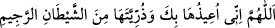

(Nimet ve ihsanlarından dolayı Allah’a hamd ve şükürler olsun. O’na ulaşan ve O’nu
razı eden bir şehâdetle şehâdet ederim ki tek olan Allah’tan başka ilâh ve O’nun ortağı
da yoktur.)”
Nikâh akdi tamamlanınca Rasûlullah (s.a.) bir tabak hurma istedi ve onu önüne koydu.
Orada hazır bulunanlara “Buyurun, alın” buyurdu. Zifaf gecesi olunca Ali (r.a.)’a:
“Benimle karşılaşmadan bir şey konuşma.” dedi. Ümmü Eymen Fâtıma’yı getirdi ve
odanın bir kenarına oturdu. Ali (r.a.) da diğer tarafına oturdu. Sonra Rasûlullah (s.a.)
geldi. Fâtıma’ya: “Bana su getir” buyurdu. Fâtıma (r.anhâ) utandığından dolayı ayağı
elbisesine sürçerek kalktı, bir kap su getirdi. Rasûlullah (s.a.) kabı aldı, ondan mübarek
ağzına su alıp çıkardı. Sonra Fâtıma’ya: “İleri gel” buyurdu. Fâtıma (r.a.) da öne çıktı.
Rasûlullah (s.a.) onun göğsüne ve başına bu sudan serpti ve sonra şöyle duâ etti:
“
(Allah’ım! Onu ve zürriyetini, rahmetten kovulmuş şeytanın şerrinden sana
sığındırırım.)”
Sonra tekrar “Bana su getirin” buyurdu. Ali (r.a.) der ki: “Ben onun ne yapmak
istediğini anladım. Kalkıp kabı doldurdum ve getirdim. Rasûlullah (s.a.) kabı aldı,
ağzına ondan su alıp verdi. Fâtıma’ya yaptığı şekilde bana da yaptı, ona duâ ettiği gibi
bana da duâ etti ve şunu da ekledi:
“
Allah’ım, zifaflarını onlar hakkında mübarek kıl, onlar üzerine mübârek kıl ve onlar
için mübârek kıl.” Sonra İhlas ve Muavvizeteyn sûrelerini okudu. Peşinden: “Ey Ali!
Allah’ın ismi ve bereketiyle ehlinle zifâfa gir.” buyurdu.
Onların koç derisinden bir döşeği ve bir de kadife örtüsü vardı. Uzun olarak yayınca
sırtları açıkta kalır, enine yayınca başları açılırdı.
Fâtıma (r.a.) bir gün: “Ya Rasûlallah! Bizim şu koç derisinden başka yatağımız yok.
Geceleyin üzerinde uyuyoruz, gündüz de hayvanımızı onun üzerinde yemliyoruz.” dedi.
Rasûlullah (s.a.): “Ey kızcağızım! Sabret. Çünkü Mûsa b. İmrân (a.s.) hanımıyla on
sene ikâmet etti. Katavân abasından başka bir abaları yoktu” buyurdu. Katavân,
Kûfe’de bir yerin ismidir.
Hz. Hatice Fâtıma (r.a.)’yı peygamberlik gelmeden beş sene önce dünyaya getirdi.
Peygamberimizin vefâtından altı ay sonra 28 yaşında Medine’de vefat etti. Onun (r.a.)
ve evlâdlarının menkıbeleri çoktur ve herkes tarafından bilinmektedir.
Ali (r.a.) 63 yaşında Kûfe’de şehit edildi. Hasan (r.a.) cenaze namazını kıldı ve
geceleyin defnedildi. Vasiyeti üzerine kabri kaybedildi. Ümeyyeoğuları zamanında ve
Abbasoğullarının hilâfetini ilk zamanlarında, Cafer Sâdık (r.a.) tarafından yeri
gösterilinceye kadar bilinmiyordu. Rasûlullah (s.a.) Ali (r.a.)’a şöyle buyurmuştur: